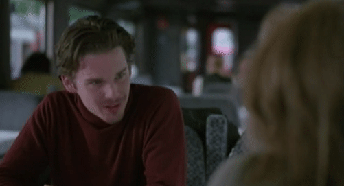

"Listen. I hope one day you find your place, Celine. Find your Dorian. This world was not made to be a lonely place," he adds. You smile and bid farewell to him. Secretly, you wish for him to ask you to get off the train with him.
CONTINUE